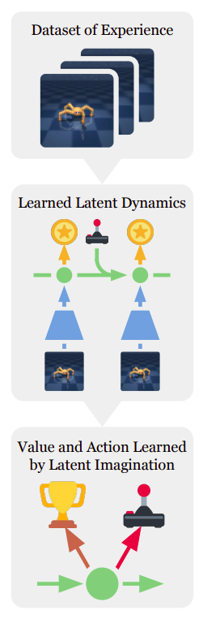
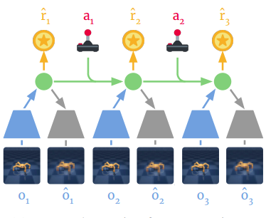
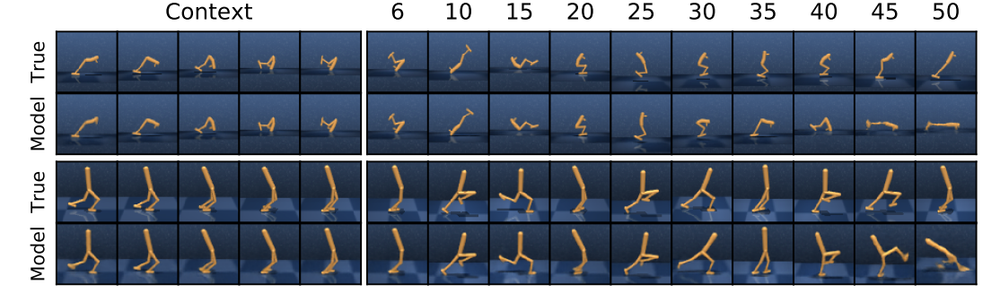
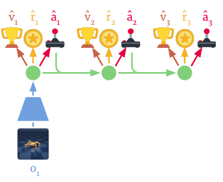
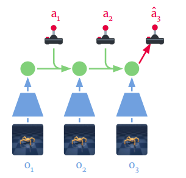

1 No More Searching
Another day, another deep dive. Today, I'm breaking down a fascinating paper, and if you've seen the title, you should already be curious. How do you learn from futures that never happened? What even counts as a "future" in this context? Let's get right into it.
My last blog post covered PlaNet and how a world model does online planning. The agent evaluates possible actions, projects action sequences, and uses its learned world model to predict which path yields the best reward. Sounds great, right? But the way PlaNet goes about this is brutal. It relies on the Cross Entropy Method, an optimization algorithm that searches through possible action sequences. The agent repeatedly samples, refines its search, executes the first action, receives a new observation, and then repeats the entire process. It is painstakingly slow and computationally heavy.
For comparison, the Dreamer paper reports a training time of about 3 hours per $10^6$ environment steps on the Control Suite, compared to about 11 hours for PlaNet. That gap is basically the cost of PlaNet's search, and it will make more sense once I get into why Dreamer does not need to search at all.
Dreamer takes a completely different approach. It eliminates the Cross Entropy Method and, with it, the need for online planning during inference. It still works within a POMDP, still uses a stochastic latent state, and still relies on the Recurrent State Space Model. What changes is what it does with that world model.
So if we remove online planning, how does the agent know which action to take? Wasn't that the whole point of PlaNet?
Instead of searching for the best action at inference time, Dreamer uses the world model during training to generate imagined futures and learns which actions are good from those simulated experiences. The world model is still doing the heavy lifting, but instead of using it to search for an action every time the agent acts, Dreamer uses it to train a policy that already knows what to do.
The researchers realized that because the RSSM is a neural network, they could backpropagate through the imagined trajectories it generates. This allows them to update the network weights directly, instead of relying on brute-force Cross Entropy search. This is where the Actor and Critic come in. The Actor learns which actions to take, while the Critic learns how valuable those imagined states are. Once they are trained, the Actor can directly output an action from the current state during inference. No search, no CEM, no planning loop.
Reading this paper really enlightened me and I enjoyed it. Stay with me, because this is going to be a fun one!

2 Running Without Looking
Apart from eliminating online planning, Dreamer can learn long-horizon behaviour through latent imagination. By planning horizon, I mean how far into the future the agent tries to predict the consequences of its actions before making a decision. In PlaNet, this means searching through a limited number of future steps with CEM, because extending that search further makes the computation more expensive. Dreamer sidesteps this entirely. During training, it uses the world model to imagine future trajectories in latent space, so the agent can learn about longer-term consequences without paying that search cost at every interaction. It is not that it imagines further ahead than PlaNet could search, the imagination horizon is still fixed at a set number of steps, it is that the value model picks up where the imagined rollout stops and carries the long-term information from there.
The RSSM, encoder, decoder, and reward predictor are all trained together on real trajectories. During real interaction, the model receives observations from the environment and uses them to maintain its current latent state. But during imagination, the model can start from a latent state inferred from real experience and continue the trajectory using its learned dynamics without receiving new observations from the environment. Each predicted latent state becomes the starting point for the next step, and the entire trajectory remains in latent space.
Think about what that means concretely. Say the agent just saw the walker mid-stride. It encodes that observation into a latent state grounded in reality. Now, without taking another step in the real environment, the RSSM rolls forward. What would the next latent state look like if the agent pushed harder with the left leg? What about easing off? Each of those predicted states becomes the starting point for another prediction, and another, building out a full imagined trajectory from a single real moment. The environment never provides a correction during this process, the model is running entirely on its own predictions.
Part of what the world model is trained to do is make sure the prediction the RSSM makes before seeing an observation matches the prediction it makes after seeing it. That matters because during imagination there is no observation coming in, only the prior prediction, so the two need to already agree by the time training is done.

So now we have a world model that can take a state grounded in reality and continue generating a future entirely inside latent space. The next question is how Dreamer actually learns from those imagined futures, which is what I will get into next.
3 Experience That Never Happened
The Actor and Critic work during latent imagination, and the goal here is to train the Actor to output actions that lead to high long-term reward instead of having to search for those actions every time the agent interacts with the environment. The Critic, also called the value model, is used during training to estimate how valuable the imagined states are, and this information is used to improve the Actor. The Critic is not actually needed during inference for selecting actions, because once the Actor has been trained, it can directly output an action from the current latent state.
Here is what a single imagined rollout looks like. Dreamer starts from a latent state obtained from real experience. The Actor looks at that state and picks an action. The learned dynamics predict the next latent state. The reward model predicts the reward. That new state becomes the starting point for the next step, and this repeats for the imagination horizon, which is 15 steps for the continuous control experiments.
Let me make this less abstract with an actual example. Take walker walk, where the agent controls a two-legged body and the whole point is staying upright while moving forward. Say the agent is mid-stride and about to imagine 15 steps ahead. The Actor looks at the current latent state and picks a small adjustment, maybe more torque on the back leg to keep from tipping. The learned dynamics take that action and the current latent state and predict what the next latent state probably looks like, still balanced, slightly further forward. The reward model looks at that predicted state and guesses a reward for it, something like a small positive number for staying upright and moving. That new state becomes the starting point for step two, the Actor picks another action, the dynamics predict again, the reward model guesses again, and this keeps going for the full 15 steps. None of this touched the real environment. The walker never actually took a single one of those steps in the real world, the RSSM predicted what would happen if it did, and it is this imagined sequence of states, actions, and rewards that the Actor and Critic actually learn from.

Since the world model is made of differentiable neural networks, the Actor's actions affect the future latent states and predicted rewards through the learned dynamics. This means that gradients can be propagated through the imagined trajectory, allowing the Actor to be updated according to the long-term value of the states its actions lead to.

How the Actor and Critic actually learn
The Critic is trained using Bellman-style value updates. A Bellman backup updates the estimated value of a state using the reward associated with that transition together with the estimated value of the next state, usually multiplied by a discount factor $\gamma$. You can think of it as taking information about future rewards and using it to improve the value estimate of an earlier state.
Dreamer then uses something called a $\lambda$-return instead of relying only on a one-step Bellman target. The idea is to combine different multi-step return estimates, where some estimates look only a short distance into the future and others use more of the imagined trajectory before bootstrapping from the Critic. The parameter $\lambda$ controls how strongly these different multi-step estimates are weighted.
A value of $\lambda$ closer to zero puts more weight on shorter, more bootstrapped estimates, while a value closer to one gives more weight to longer returns that rely more on the imagined rewards. Dreamer uses $\lambda = 0.95$, while the discount factor is $\gamma = 0.99$, so these two values play different roles.
What I mean by that is, this is really the bias-variance tradeoff in action. A one-step target depends heavily on the Critic's current estimate, so if the Critic is inaccurate, the target can be biased. Longer multi-step targets use more of the rewards from the imagined trajectory and rely less on the Critic, but they can become more sensitive to errors that appear further along the rollout. The $\lambda$-return provides a middle ground between these extremes by combining different multi-step estimates rather than relying completely on either a one-step target or a full return.
The Critic gets nudged closer to the $\lambda$-return target using a slowly updated copy of itself, so the target it is chasing does not keep shifting. The Actor gets pushed to make the states its actions lead to score higher on that same $\lambda$-return, with a small entropy bonus added to prevent it from settling into one fixed behaviour too early and losing the ability to explore.
Making it all differentiable
There is a problem though, because the stochastic latent state has to be sampled during imagination, and ordinary random sampling would interrupt the path needed for gradient-based learning. This is where the reparameterization trick, borrowed from variational autoencoders, becomes useful. Instead of treating the sample as an operation that blocks gradients, the stochastic state can be written using the predicted mean and standard deviation together with an external noise variable.
The randomness comes from $\epsilon$, which is external noise that does not depend on any parameters. The mean $\mu_t$ and standard deviation $\sigma_t$ are predicted by the network, so gradients can flow through them. This allows the sampled state to remain part of the differentiable computation.
So the whole process becomes a differentiable imagined training loop. The Actor chooses actions, the world model predicts the consequences, the Critic estimates the value of the imagined states, the $\lambda$-return provides the value targets, and gradients can flow through the imagined trajectory to improve the Actor. The agent is learning from futures that it never actually experienced, using its learned world model as the environment in which that learning takes place.
4 Just Act
Once training is done, inference is where all of it gets put to use. We cut the imagination loop off and the Critic has also fulfilled its duties. All we have now is the Actor and the part of the RSSM that is needed to maintain the current latent state, since there is no reason to keep running the imagination loop when the Actor has already been trained.
We pass a real observation $o_t$ into the encoder, which turns it into something the RSSM can actually use. That gets combined with the recurrent state $h_t$ to work out the current stochastic state $s_t$, and the two together get passed into the fully optimized Actor network. The Actor then directly outputs the action to take.

We do not do any online planning or search through possible actions. The Actor has already learned from all those imagined trajectories during training, so when it encounters a state during inference, it can directly choose an action instead of having to search through possible futures again.
Everything that happened during imagination was essentially preparation for this moment. The expensive part happened during training, where the Actor could repeatedly learn from futures generated by the world model, and now during inference it simply uses what it has learned.
By the way, all of this was tested on 20 continuous control tasks from the DeepMind Control Suite, learning straight from pixels rather than from low-dimensional state, which is part of why the training time comparison against PlaNet earlier actually means something, since both are solving the harder pixel-based version of these tasks.
This is Dreamer.
5 Looking Ahead
This was a very interesting paper for me, so, so good! Everything I studied from PlaNet has built up to this moment, and I really like the progression because every paper adds something new to what I already understand. PlaNet showed me how a world model could be used to plan by searching through possible futures, while Dreamer takes that same idea and changes how the world model is used, instead of repeatedly searching for the best action at inference time, it uses the world model during training to generate imagined futures and learn a policy from them.
Dreamer is not perfect though. One thing that becomes more important in Dreamer is the accuracy of the learned world model, because the Actor is actually trained using the futures generated by that model. If the imagined dynamics are inaccurate, those incorrect predictions can become part of the training signal and influence what the Actor learns. This is different from PlaNet, where the agent executes only the first action from its planned sequence and then receives a new real observation before planning again, so the real environment keeps correcting the model's predictions.
Even with that limitation, I think the idea behind Dreamer is really powerful. The world model is no longer just being used to search for an action, it becomes a place where the agent can generate experience and learn from it without having to physically experience every one of those futures. Seeing this progression from World Models to PlaNet and now Dreamer has made the whole idea of model-based reinforcement learning much clearer to me.
It is exhilarating to see how much more I understand now compared to when I first started reading these papers, and I am really looking forward to reading DreamerV2 and seeing what changes in the next step of this progression.
References
- Hafner, D., Lillicrap, T., Ba, J. and Norouzi, M. (2020). Dream to Control: Learning Behaviors by Latent Imagination. International Conference on Learning Representations.
- Hafner, D., Lillicrap, T., Fischer, I., Villegas, R., Ha, D., Lee, H. and Davidson, J. (2019). Learning Latent Dynamics for Planning from Pixels. arXiv:1811.04551.
- Ha, D. and Schmidhuber, J. (2018). World Models. arXiv:1803.10122.
- Kingma, D. P. and Welling, M. (2014). Auto-Encoding Variational Bayes. arXiv:1312.6114.